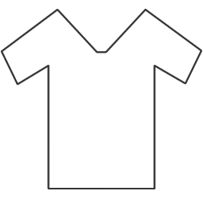

0%
Positivo
Nome
@usuario
Tipo de fã:
Tipo
Análise dos Tweets
Recomendações
Último Clutch
Assista ao destaque da FURIA
Assista ao destaque da FURIA

Camisa Oficial
Desconto de 23% na loja
Desconto de 23% na loja
Evento ao vivo
Assista no canal da FURIA
Assista no canal da FURIA
Rede Oficial
@FURIA — Últimas novidades
@FURIA — Últimas novidades